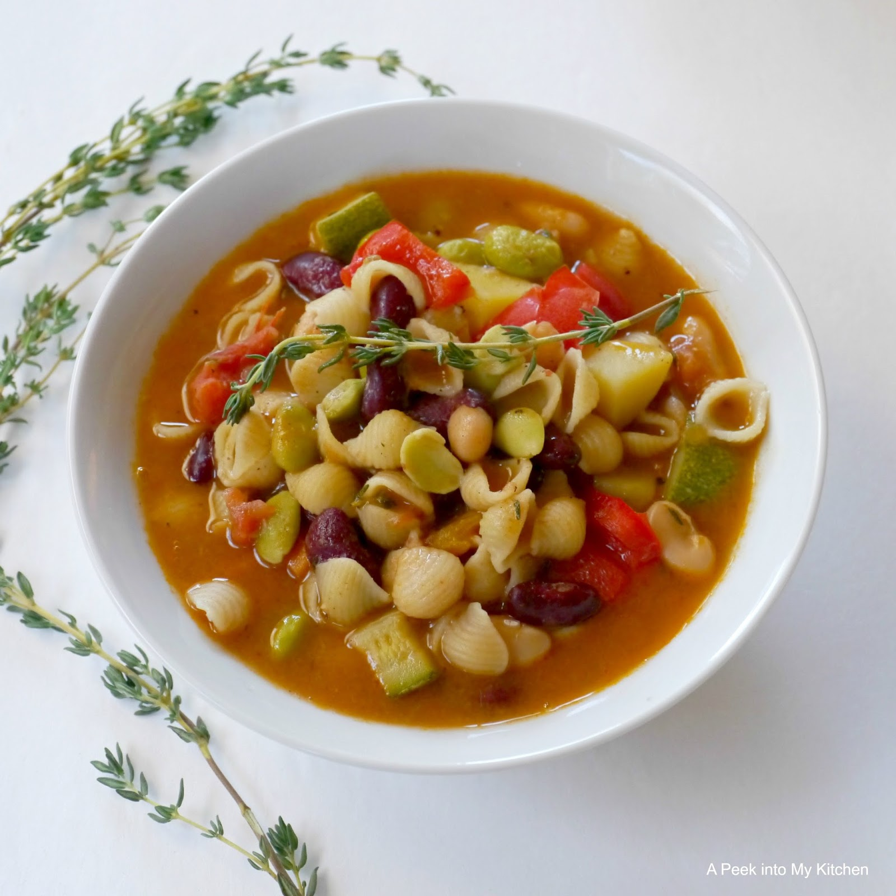

Minestrone is a hearty tomato-based vegetable soup containing beans and pasta. Its vegetable contents tend to vary with the seasons; this recipe is only one possible combination!
Ingredients
- 2 tbsp olive oil
- 3/4 cup diced onion
- 1/2 cup sliced celery
- 1/2 cup carrots, peeled and sliced
- 1 zucchini, quartered and sliced
- 2 teaspoons minced garlic
- 14oz diced tomatoes
- 4 cups vegetable broth
- 1/4 cup tomato paste
- 2 tsp Italian seasoning
- 15oz small white beans, drained and rinsed
- 15oz kidney beans, drained and rinsed
- 1/2 cup frozen cut green beans
- 1/2 cup small pasta of choice
- 2 cups baby spinach leaves
- 2 tbsp chopped parsley
Preparation
- Heat the olive oil in a large pot over medium-high heat
- Add onion, celery, carrots, and zucchini. Cook until vegetables are tender. Once tender, add garlic and roast for 30 seconds to 1 minute.
- Add tomatoes, vegetable broth, tomato paste, and Italian seasoning; bring to a simmer
- Add white beans, kidney beans, green beans, and pasta. Simmer for 10 to 15 minutes or until pasta and veggies are tender.
- Season with salt and pepper to taste.
- Stir in spinach leaves and cook until wilted, 2 to 3 mintues.